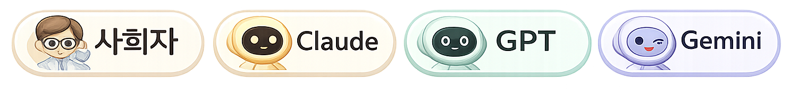

핵심 질문
AI BIO 혁신센터가 R&D 경쟁력에 실질적 도움이 되는가? 데이터·조직·외부협력 준비가 충분한가?
주제 정리
✓ 완료사회자가 안건을 정리하고, 주제에 맞는 3개 관점을 동적으로 배정합니다.
AI BIO 혁신센터가 R&D 경쟁력에 실질적 도움이 되는가? 데이터·조직·외부협력 준비가 충분한가?
전략 전환 필요성과 실행 리스크를 함께 비교해 단계적 추진 방향을 도출
전략 전환 관점, 실행 역량 관점, 협력/투자 구조 관점

사회자
주제는 "AI BIO 혁신센터 확대가 지금 현실적으로 타당한가?"입니다. 전략 전환, 실행 역량, 협력/투자 구조 관점에서 비교해 주세요.
Claude
GPT
Gemini
방향은 타당하지만, 바로 대규모 센터로 확장하기보다 핵심 파이프라인과 AI 적용 지점을 정한 뒤 단계적으로 검증하는 방식이 현실적입니다.
Claude바이오와 AI 중심 전환은 장기 R&D 경쟁력 확보를 위해 필요하지만, 포트폴리오 의사결정을 바꾸는 구조여야 한다고 봅니다.
GPT센터 설립보다 데이터 품질, 연구자 사용성, 조직 권한, 성과 기준이 더 중요하다고 봅니다.
Gemini자체 개발보다 외부 협력과 투자 게이트를 설계하는 컨트롤타워 역할이 핵심이라고 봅니다.
6~12개월 파일럿으로 시작합니다.
AI BIO 혁신센터의 권한을 명확히 합니다.
내부 개발과 외부 협력을 분리해서 운영합니다.